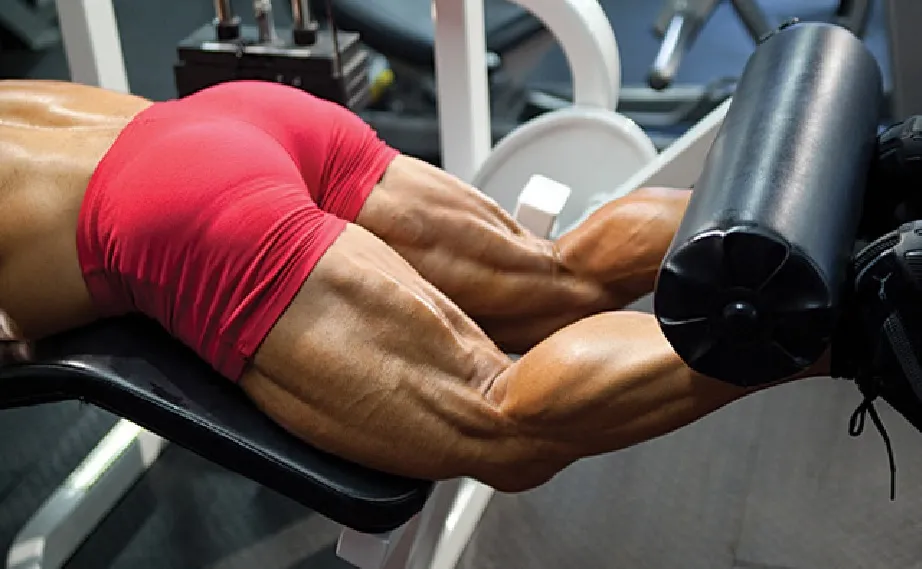

TREN SUPERIOR
Enfocado en reclutar la mayor cantidad de masa muscular al inicio.
//Press de Banca con Barra o Mancuernas: 4 series x 8-12 repeticiones.
//Dominadas o Jalón al Pecho: 4 series x 8-12 repeticiones.
//Press Militar (Hombro): 3 series x 8-10 repeticiones.
//Remo en Polea Baja: 3 series x 8-12 repeticiones
CORE
Para lograr la hipertrofia del core, debes aplicar sobrecarga progresiva y rangos de 8 a 20 repeticiones con carga externa. Prioriza ejercicios que resistan el movimiento (anti-movimiento) sobre los encogimientos tradicionales, utilizando poleas, mancuernas o barras para estimular el crecimiento muscular del abdomen y lumbares.
//puedes basarte en nuestra rutina de core en FUERZA pero maximizando esta consigna//

TREN INFERIOR
//Sentadilla Frontal (o Goblet pesada): 4 series x 12 repeticiones. (Descanso: 3 minutos).
//Peso Muerto Convencional (o Semi-sumo): 3 series x 10 repeticiones.
// (Descanso: 3 minutos).Prensa de piernas unilateral (A una pierna): 3 series x 8 repeticiones por pierna. (Descanso: 90 segundos).
//Curl femoral acostado: 4 series x 8 repeticiones. (Descanso: 90 segundos).
//Elevación de talones en prensa: 4 series x 10 repeticiones. (Sostén 2 segundos abajo el estiramiento).